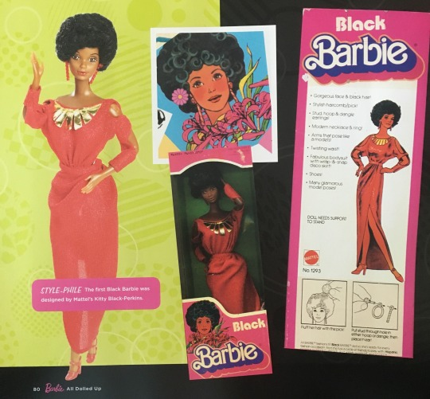
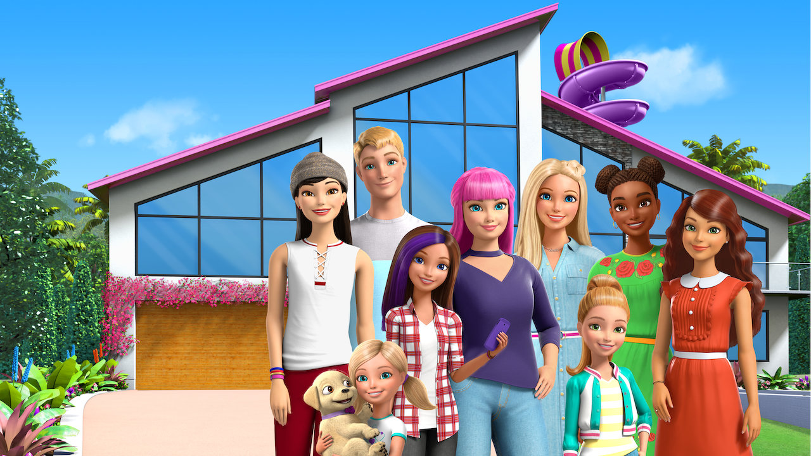
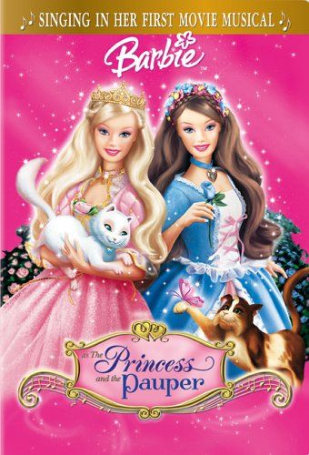
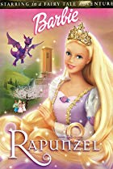

Barbara Millicent Roberts aka Barbie was debuted March 9,1959 as an 11.5 inch doll . She has key features such as her iconic blonde hair with blue eyes and moveable body parts such as the arms and legs. There is a vast variety that ranges from different skintones, careers to body types the company introduced in 2016 that represented tall,curvey and petite. Although she has a disproportioned body to an acutal female it offered many girls a different option to play. "Yet many women who played with the doll credit Barbie with providing an alternative to restrictive 1950s gender roles." Barbie has over 200+ careers that encourage girls around the world to be who they want such as a surgeon when the 1970s had few women who were applying to medical school. She has many other careers that inspire girls to be in a industry where they are underrepresented or mostly male dominated. Barbie encourages young women to explore different careers that influence them to become what ever they want to be.
"I got this for my 6 yr old grand-daughter. It's a typical Barbie in that she'll be able to put any Barbie clothes on it, but I love the message that girls can certainly be a doctor and it's fun and fashionable to wear glasses if you need them - which her sisters both have to wear."
- J.C Cory
"I love that this is a strong female career doll for little girls. Girls need to see that you can be anything you want, and a barbie doll is a great example of that! Super cute set for kids to play with!"
- Stephanie Callahan
She has a variety of movies and iconic songs such as "free" or "I'm a girl like you" from Princess and the Pauper.
A song based on her called "Barbie Girl" by Aqua.
First Barbie that was introduced
first African American doll named Christie,debuted in 1968
Tv show based on Barbie's family
Princess and the Pauper, released September 28,2004
Rapunzel,released October 1,2002